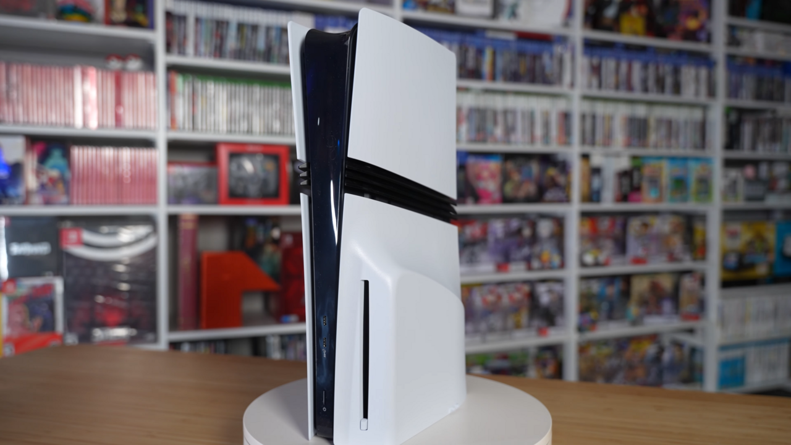
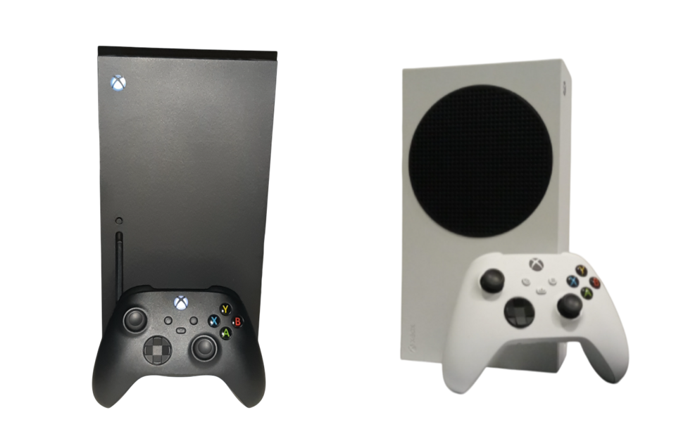
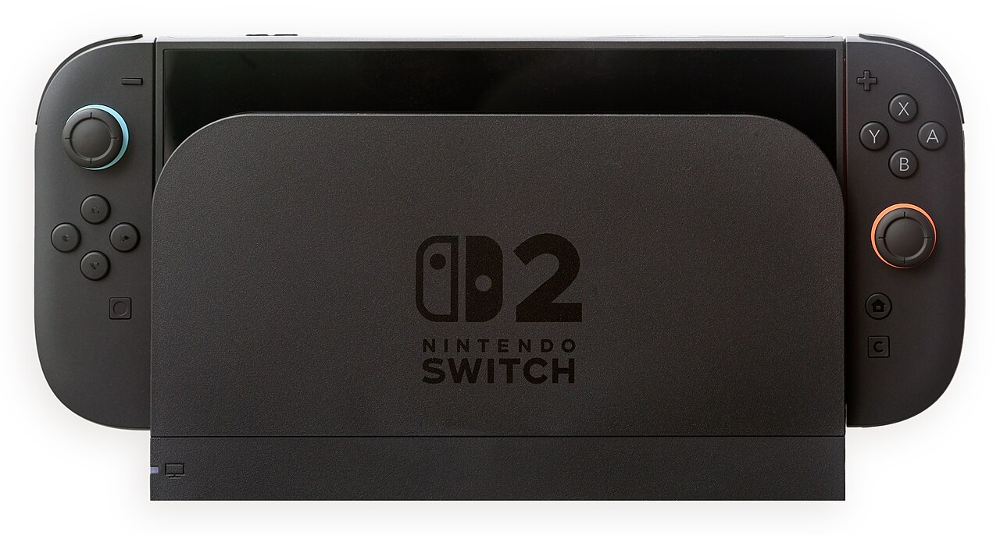

Era Atual: velocidade e novas formas de jogar
Discos SSD quase eliminaram as telas de carregamento, e os gráficos chegaram perto do cinema.
PlayStation 5 (2020)
Coloque aqui a foto:

(sugestão: Wikimedia Commons, anotando a fonte)
Trouxe SSD ultrarrápido e o controle DualSense, com vibração e gatilhos adaptáveis que mudam a sensação de cada jogo.
Jogos que marcaram
- Astro Bot
- God of War Ragnarök
- Returnal
Oque o playstation 5 significou:O PlayStation 5 representa uma nova etapa na evolução dos videogames, marcada pela busca por experiências mais imersivas, carregamentos extremamente rápidos e uma integração cada vez maior entre tecnologia e jogabilidade. Lançado em 2020, o console da Sony chegou em um período de transformação mundial, durante a pandemia de COVID-19, quando os videogames ganharam ainda mais espaço como forma de entretenimento e conexão entre pessoas. Com hardware mais avançado, armazenamento SSD e um controle com tecnologias de resposta tátil, o PS5 ampliou as possibilidades de interação e estabeleceu novas referências para os consoles modernos.
Xbox Series X|S (2020)
Coloque aqui a foto:

(sugestão: Wikimedia Commons, anotando a fonte)
Apostou em potência e no Game Pass, com jogos novos disponíveis por assinatura desde o lançamento.
Jogos que marcaram
- Forza Horizon 5
- Starfield
- Halo Infinite
Oque o Xbox series X significou:O Xbox Series X representa um avanço importante na evolução dos consoles, simbolizando uma geração em que desempenho, velocidade e serviços digitais passaram a ocupar um papel central na experiência dos jogadores. Lançado em 2020, o console da Microsoft chegou com a proposta de oferecer alto desempenho, gráficos avançados e uma experiência de jogo mais fluida. Com hardware poderoso, armazenamento SSD e integração com o ecossistema Xbox, o Series X ajudou a estabelecer uma nova referência tecnológica e reforçou a ideia de que o futuro dos videogames não depende apenas dos consoles, mas também dos serviços e das comunidades que os acompanham.
Nintendo Switch 2 (2025)
Coloque aqui a foto:

(sugestão: Wikimedia Commons, anotando a fonte)
Sucessor do Switch, mantém a ideia de jogar em casa ou em qualquer lugar, agora com mais potência.
Jogos que marcaram
- Mario Kart World
- Donkey Kong Bananza
Oque o Nintendo switch 2 significou:O Nintendo Switch 2 representa a continuidade de uma das maiores transformações da história dos videogames: a união entre a experiência dos consoles domésticos e a liberdade dos videogames portáteis. Lançado em 5 de junho de 2025, o sucessor do Nintendo Switch chegou com a proposta de aprimorar uma ideia que já havia conquistado milhões de jogadores. Com hardware mais potente, tela maior, novos controles e recursos de conectividade, o console busca oferecer experiências mais avançadas sem abandonar a característica que tornou seu antecessor tão marcante: a possibilidade de jogar em casa ou em qualquer lugar.